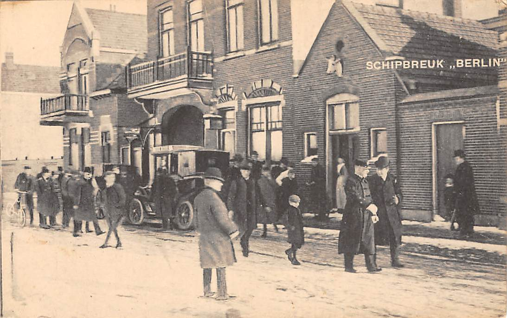
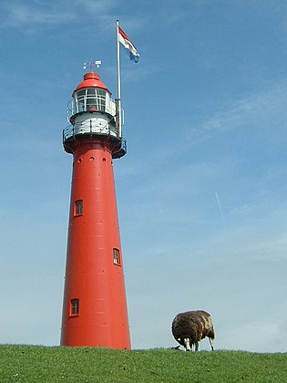

Feit 1 = Het Noorderhoofd, een 1900 meter lange in zee stekende pier, dient ter bescherming van Europa's meest bevaren havenmond.
Feit 2 = Van 1899 tot 1967 stond in Hoek van Holland de kleinste volledige vuurtoren van Nederland.
Feit 3 = Door The Nits uit Amsterdam werd Hoek van Holland in 1979 bezongen in 'Hook of Holland'.
Feit 4 = Tussen Hoek van Holland en Maassluis ligt de Maeslantkering, die de Nieuwe Waterweg kan afsluiten; het sluitstuk van de Deltawerken.
Feit 5 = Hoek van Holland is pas rond 1865 ontstaan.
Artikel 1

Hoek van Holland is niet eens zo heel oud! Hoek van Holland is pas rond 1865 ontstaan. In tegenstelling tot bijvoorbeeld Maassluis of Naaldwijk is er in Hoek van Holland daarom ook helemaal geen oude (middeleeuwse) kerk. Wel eens opgevallen?
De nederzetting ontstond toen arbeiders en mensen van Rijkswaterstaat erheen verhuisden vanwege de aanleg van de Nieuwe Waterweg in 1866 – de toegang naar zee die Rotterdam in één klap een grote havenstad maakte. Oorspronkelijk heette dit arbeidersdorpje de ‘Oude Hoek’.
Artikel 2

Hoek van Holland is een kustplaats in Zuid-Holland, gelegen op de noordoever van de Nieuwe Waterweg waar deze de Noordzee bereikt. Hoek van Holland is een voormalige deelgemeente (sinds 2014 bestuurscommissiegebied) van de gemeente Rotterdam, maar ligt circa 25 kilometer ten westen van de stad Rotterdam. De gemeente Rotterdam is voor statistische doeleinden onderverdeeld in wijken en buurten,